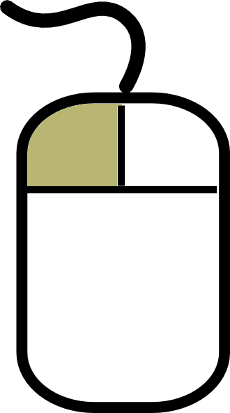
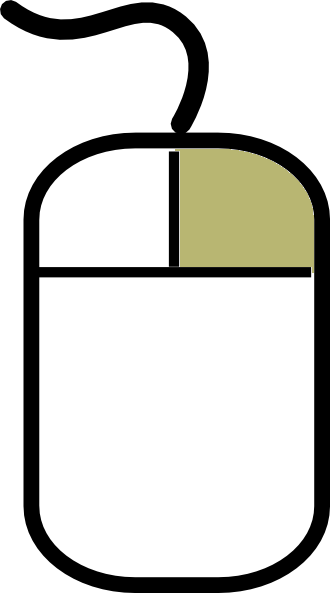

What if Minesweeper was played on a world map?
GeoMines is a simple tweak on the classic Minesweeper game. Instead of a grid, we play on a world map, with each country as a cell.
Try to find all the mines without tripping one! Put the mouse on a country to see how many countries touch it. The touching countries will be highlighted.
 Click on a country to find out if there's a mine in it. If there's a mine, you lose. Otherwise, you find out how many mines are in the countries touching it.
 If you figure out where a mine is, you can click it with the right mouse button to flag it. Once you have cleared all the countries that are not mined, you win!